Im Alltag arbeiten ab App 2.0
Ab Version 2.0 hat die POS Gastro App eine neue Oberfläche. Die Abläufe an der Kasse bleiben gleich; geändert hat sich die Bedienung in der App: Statt Wischgesten gibt es sichtbare Schaltflächen an Position und Tisch, neue Tische und Zieltische werden über einen Ziffernblock eingegeben.
Diese Seite beschreibt die Bedienung ab App 2.0. Für App 1.x gilt ITR Partner Service → Produkte → POS Gastro App → Im Alltag arbeiten.
Tischübersicht
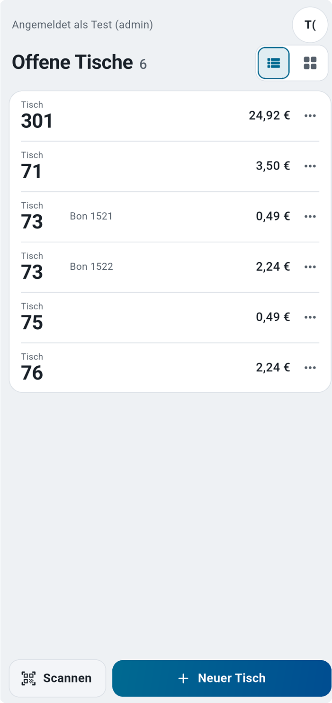
- Oben steht der angemeldete Bediener, rechts daneben das App-Menü (Kreis mit den Initialen).
- Offene Tische zeigt die Anzahl. Die Ansicht schalten Sie mit den beiden Symbolen rechts zwischen Liste und Kacheln um.
- Jede Zeile zeigt Tischnummer und Betrag. Hat ein Tisch mehrere Bons, steht die Bonnummer dabei.
- Über … am Ende der Zeile öffnen Sie die Tischaktionen (siehe Tische umplatzieren, zusammenführen und aufteilen).
- Unten: Scannen öffnet einen Tisch per QR-Code, Neuer Tisch legt einen Tisch an.
Bestellung erfassen und senden
Gebuchte Artikel bleiben zunächst auf dem Mobilgerät. Erst wenn der Tisch verlassen wird, gehen alle bis dahin gebuchten Positionen gemeinsam als eine Bestellung an die Kasse und den Küchenmonitor.
- Tippen Sie auf Neuer Tisch, geben Sie die Tischnummer über den Ziffernblock ein und tippen Sie auf Erstellen. Einen offenen Tisch öffnen Sie durch Antippen in der Tischübersicht.
- Wählen Sie oben die Warengruppe und tippen Sie die Artikel an. Jeder Tipp bucht ein Stück.
- Verlassen Sie den Tisch über den Pfeil links unten. Damit wird gesendet.
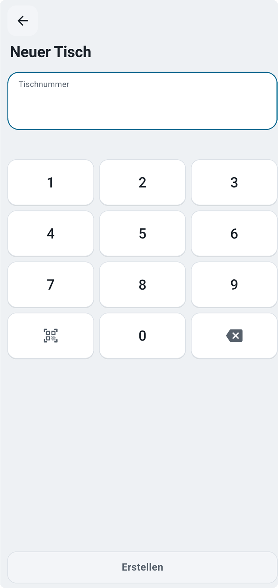
Im Ziffernblock können Sie die Tischnummer statt einzutippen auch über Scannen per QR-Code übernehmen.
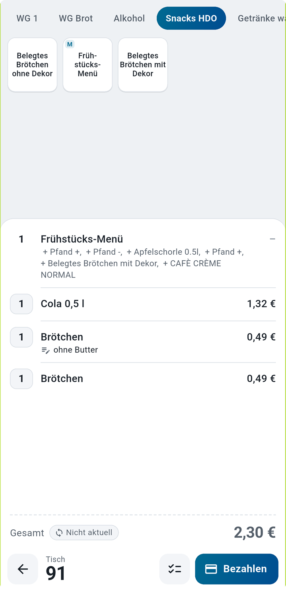
Der geöffnete Tisch zeigt oben die Warengruppen als Reiter und darunter die Artikel. Menüartikel tragen ein M. Unten steht der Bon mit Gesamt; der Hinweis Nicht aktuell neben dem Betrag bedeutet, dass die Kasse die Summe für die neu gebuchten Positionen noch nicht berechnet hat. In der unteren Leiste: links der Pfeil zum Verlassen und die Tischnummer, rechts das Auswahlsymbol für Einzelne Artikel bezahlen und Bezahlen.
Wird derselbe Tisch erneut geöffnet und weiter gebucht, entsteht beim nächsten Verlassen eine weitere Bestellung.
Menge und Anmerkung einer Position ändern
Tippen Sie eine Position im Bon an. Darunter erscheinen Weniger, die Menge, Mehr und Anmerkung.
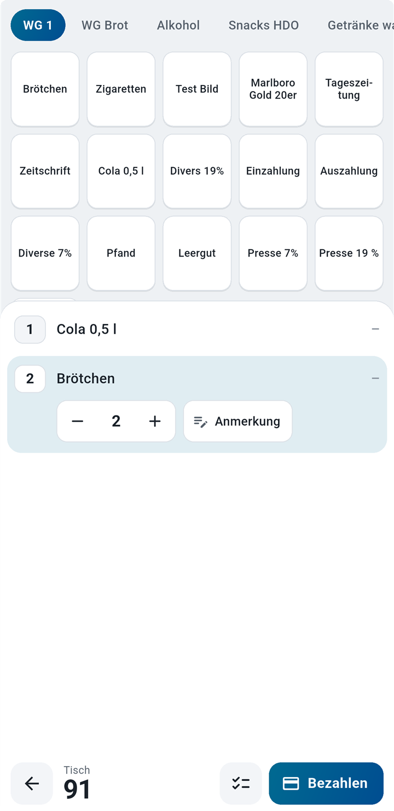
- Solange eine Position noch nicht gesendet ist, ändern Sie die Menge mit Weniger und Mehr in beide Richtungen.
- Bei bereits gesendeten Positionen zeigt die App, wie viele Stück schon bestellt sind (etwa 1 bereits bestellt). Die Menge lässt sich erhöhen, aber nicht unter die bestellte Menge verringern. Verringern und Storno erfolgen an der Kasse.
- Anmerkung erfasst einen Kommentar für den Küchenmonitor. Hat die Position eine Menge größer als eins, wird ein Stück mit der Anmerkung als eigene Position abgetrennt; die übrigen bleiben ohne Anmerkung.
Größere Mengen buchen Sie mit Mehr oder durch mehrfaches Antippen des Artikels.
Menü zusammenstellen
Tippen Sie einen Menüartikel an. Die App führt durch die Komponentengruppen des Menüs; oben stehen die Gruppen als Schritte, rechts die Vorgabe, etwa Pflicht · 1 wählen.
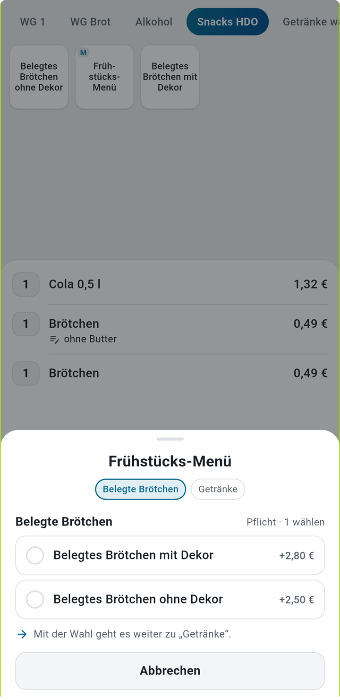
- Wählen Sie je Gruppe die Komponente. Preisaufschläge stehen hinter der Komponente, etwa +2,80 €. Nach der Wahl springt die App selbst zur nächsten Gruppe.
- Tippen Sie auf Hinzufügen. Die Schaltfläche zeigt den Menüpreis. Mit Zurück gelangen Sie zur vorherigen Gruppe, mit Abbrechen verwerfen Sie das Menü.
Im Bon steht das Menü mit seinen Komponenten als eine Position. Auswahlmenüs werden immer als eigene Position geführt, auch bei gleicher Auswahl.
Tische umplatzieren, zusammenführen und aufteilen
Tippen Sie in der Tischübersicht auf … am Ende der Tischzeile. Zur Wahl stehen:
| Aktion | Wirkung |
|---|---|
| Umplatzieren | Alles auf einen anderen Tisch setzen |
| Zusammenführen | Andere Tische auf diesen Tisch holen |
| Aufteilen | Einen Teil auf einen anderen Tisch setzen |
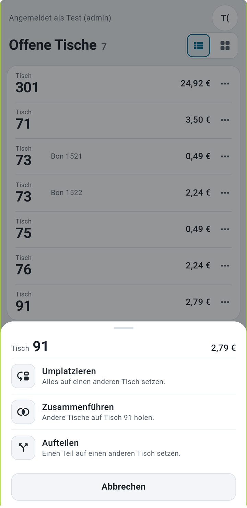
Aufteilen
- Wählen Sie Aufteilen und geben Sie die Nummer des Zieltisches über den Ziffernblock ein. Tippen Sie auf Weiter.
- Stellen Sie je Position mit Mehr und Weniger ein, wie viele Stück auf den Zieltisch wandern. Alle und Keine wählen alles bzw. nichts. Unten steht der Betrag, der auf den Zieltisch geht.
- Tippen Sie auf Umbuchen.
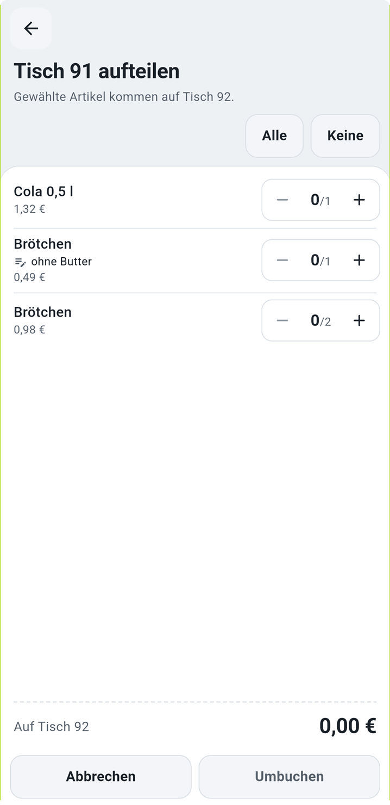
Die Positionen werden dabei verschoben statt neu erfasst. Sie behalten Preis, Rabatte und den Druckstatus der Küche; es entsteht keine neue Bestellsignatur. Beide Tische gehen anschließend an den Küchenmonitor. Ein Tisch lässt sich nicht vollständig aufteilen – dafür verwenden Sie Umplatzieren.
Zusammenführen
- Wählen Sie Zusammenführen am Tisch, auf dem die Positionen zusammenkommen sollen (Zieltisch).
- Markieren Sie einen oder mehrere Tische, deren Artikel übernommen werden. Alle und Keine markieren alle Tische bzw. heben die Auswahl auf. Unten steht, welchen Betrag der Zieltisch danach hat.
- Tippen Sie auf Zusammenführen. In der Tischübersicht steht danach nur noch der Zieltisch mit dem neuen Betrag.
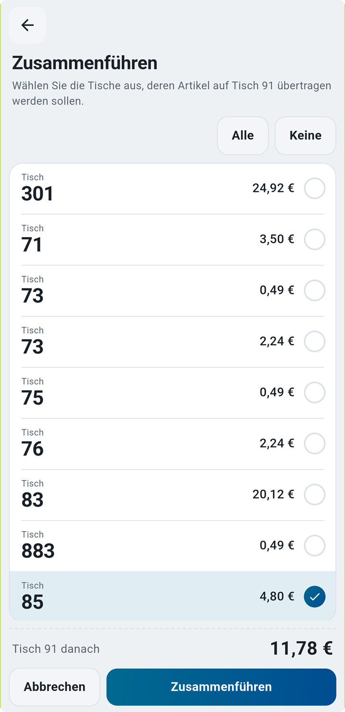
Beim Zusammenführen werden gleiche Artikel ohne Kommentar zu einer Position zusammengefasst. Positionen mit Kommentar und Wiegeartikel bleiben eigene Positionen. Der Ausgangstisch verschwindet aus der Tischübersicht; sein Beleg wird an der Kasse storniert. Beachten Sie dazu ITR Partner Service → Fiskalisierung → Fiskalisierung von Bestellungen und Zahlungen der POS Gastro App.
Bezahlen
- Tippen Sie im geöffneten Tisch auf Bezahlen. Die App zeigt den Betrag Zu bezahlen.
- Wählen Sie unter Zahlart den Zahlweg. Zur Auswahl stehen die Zahlwege, die an der Kasse für Mobilgeräte freigegeben sind; kombinierte Zahlwege sind nicht möglich.
- Wählen Sie bei Bedarf unter Trinkgeld einen Vorschlag: Ohne, gerundete Beträge mit dem jeweiligen Trinkgeld (etwa 1,00 € mit +0,51 €) oder Anderer Betrag.
- Tippen Sie auf Abschließen.
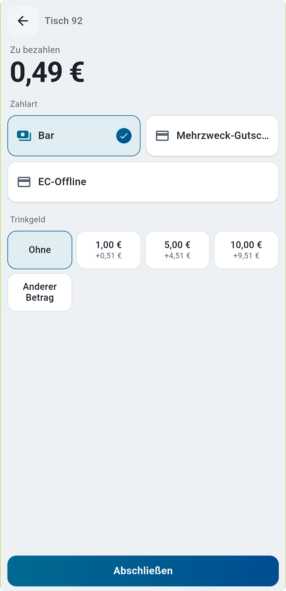
Das Trinkgeld ist eine Rechenhilfe für den Bediener und wird nicht an die Kasse übergeben. Die Kasse verbucht den Bonbetrag.
Kartenzahlungen führen Sie am separaten Kartenterminal aus; die App steuert das Terminal nicht an und verbucht die Zahlung mit dem gewählten Zahlweg.
Nach der Zahlung zeigt die App Bezahlt mit dem digitalen Bon. Unter QR-Code scannt der Gast den Bon, unter Bon sehen Sie das Bonbild. Im Browser öffnen zeigt den Bon im Browser des Geräts, Fertig führt zurück zur Tischübersicht.
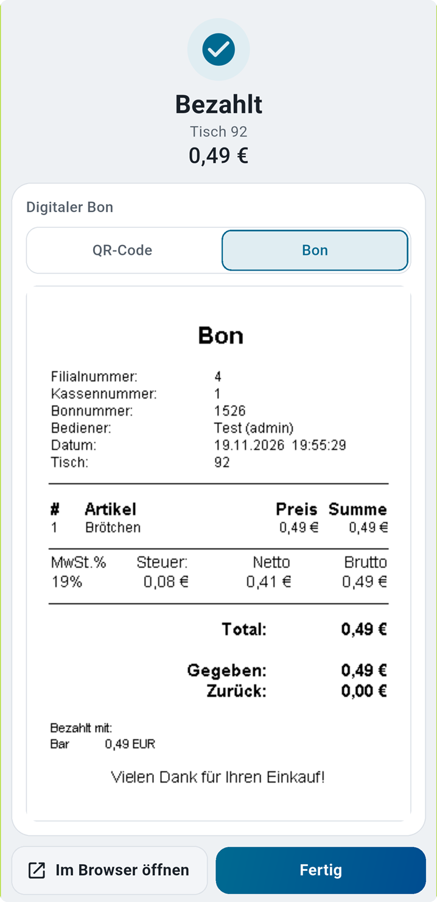
Ist die TSE der Kasse nicht aktiv, zeigt die App oben ein rotes Info-Symbol. Kassieren ist trotzdem möglich, der Beleg wird aber möglicherweise nicht signiert. Prüfen Sie dann die technische Sicherheitseinrichtung (TSE) an der Kasse.
Einzelne Positionen bezahlen
Ein Gast kann nur seine eigenen Positionen bezahlen, während der Tisch für die übrigen Gäste offen bleibt. Voraussetzung ist ITR Kasse ab 5.55.
- Tippen Sie im geöffneten Tisch auf das Auswahlsymbol links neben Bezahlen. Die Ansicht Einzelne Artikel bezahlen listet alle Positionen mit einem Zähler, etwa 0/1.
- Stellen Sie mit + und − ein, was der Gast bezahlt. Die Zwischensumme unten zeigt den Betrag.
- Tippen Sie auf Auswahl bezahlen und schließen Sie die Zahlung wie unter Bezahlen ab.
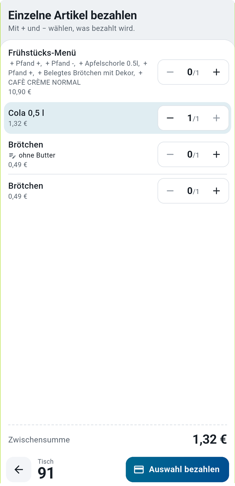
Nach Fertig bleibt die App in der Auswahl und meldet den offenen Rest, etwa Teilzahlung erledigt – auf Tisch 91 ist noch 6,98 € offen. Der nächste Gast kann direkt zahlen.
Die bezahlten Positionen erhalten einen eigenen Beleg mit eigener Bonnummer, eigener Zahlung und eigener TSE-Signatur. Der Restbetrag bleibt auf dem Tisch offen. Eine Position lässt sich nur teilweise auswählen, wenn sie teilbar ist: kein Menü, kein Wiegeartikel, eine ganze Stückzahl, kein Anteil eines Bonrabatts, keine Tickets, Seriennummern oder Bonuspunkte. Trägt der ganze Bon einen Rabatt, ist die Teilzahlung nicht möglich.
Am Küchenmonitor ändert sich durch eine Teilzahlung nichts.
Einstellungen
Das App-Menü öffnen Sie über den Kreis mit den Initialen oben rechts. Es enthält Einstellungen, Hilfe, Abmelden und unten die App-Version.
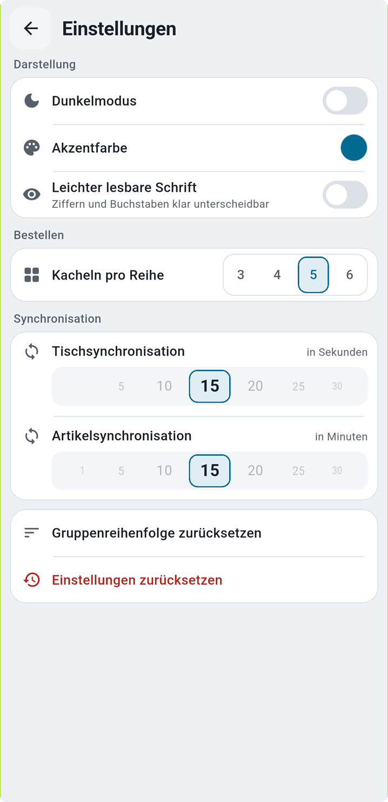
| Einstellung | Wirkung | Standardwert |
|---|---|---|
| Dunkelmodus | dunkle Darstellung | aus |
| Akzentfarbe | Farbe für Schaltflächen und Markierungen | [OFFEN] |
| Leichter lesbare Schrift | Ziffern und Buchstaben klar unterscheidbar | aus |
| Kacheln pro Reihe | Artikel je Reihe beim Bestellen: 3 bis 6 | [OFFEN] |
| Tischsynchronisation | Abgleich der Tische mit der Kasse, in Sekunden | 15 |
| Artikelsynchronisation | Abgleich der Artikel mit der Kasse, in Minuten | 15 |
| Gruppenreihenfolge zurücksetzen | eigene Reihenfolge der Warengruppen verwerfen | – |
| Einstellungen zurücksetzen | alle Einstellungen auf Standard | – |
Die Einstellungen gelten nur für das jeweilige Mobilgerät.
Synchronisieren
Preise und Rabatte berechnet ausschließlich die Kasse. Die App gleicht Tische und Artikel in den eingestellten Abständen mit der Kasse ab.
Tischsperren und Gerätewechsel
Solange ein Gerät einen Tisch bearbeitet, ist dieser für die Kasse und alle anderen Geräte gesperrt. Die App gibt den Tisch frei, sobald die Bedienung die Tischseite verlässt. Lässt sich die Sperre wegen eines Verbindungsproblems nicht regulär aufheben, gibt die Kasse den Tisch nach fünf bis sechs Minuten automatisch frei.
Ein Bediener arbeitet immer nur auf einem Mobilgerät. Meldet sich derselbe Bediener an einem zweiten Gerät an, übernimmt dieses die Sitzung.
Bestellungen, die noch nicht gesendet wurden, gehen beim Gerätewechsel und beim Beenden der App verloren. Verlassen Sie den Tisch – damit wird gesendet –, bevor Sie das Gerät wechseln oder die App schließen.
Weitere Informationen
- ITR Partner Service → Produkte → POS Gastro App → Im Alltag arbeiten (App 1.x, Nachbestellungen, Küchentext, Küchenmonitor)
- ITR Partner Service → Produkte → POS Gastro App → Störungen beheben
- ITR Partner Service → Fiskalisierung → Fiskalisierung von Bestellungen und Zahlungen der POS Gastro App